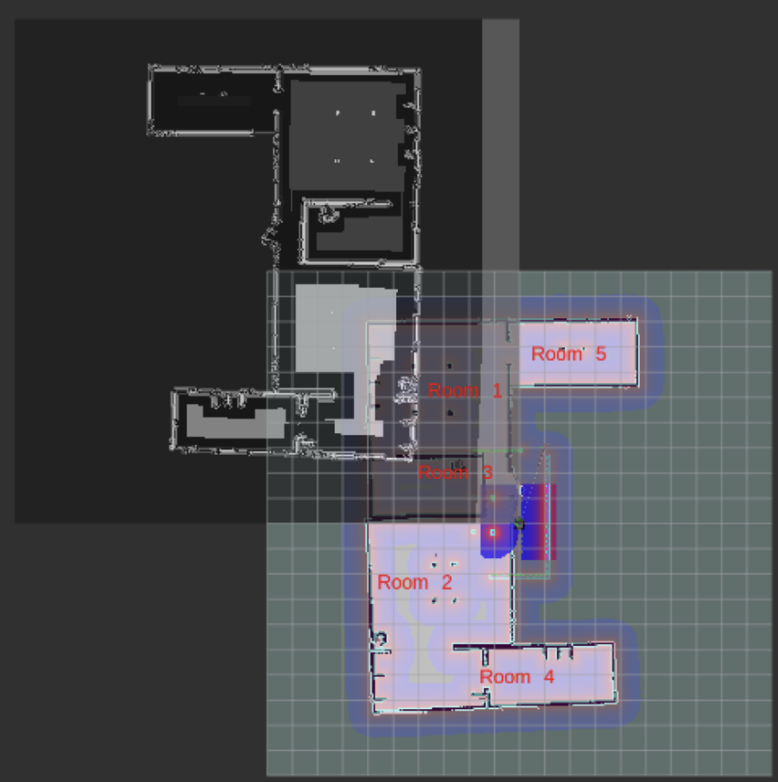
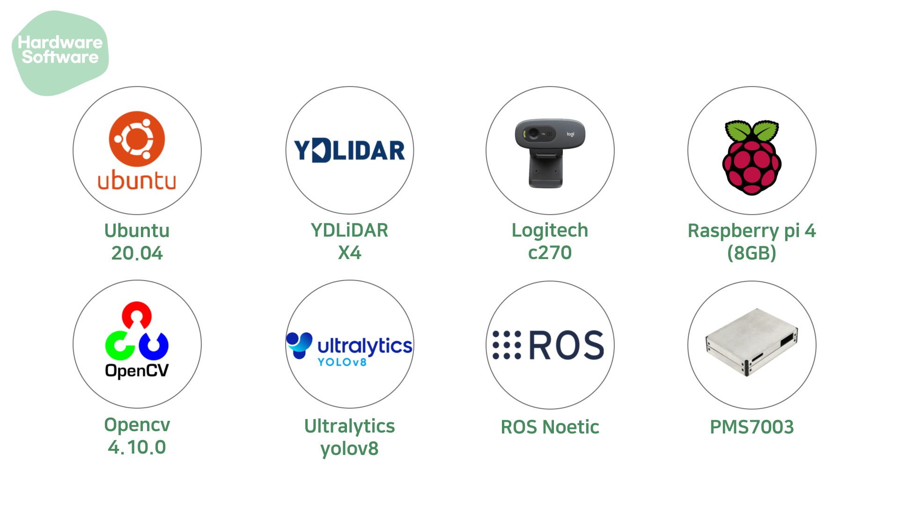
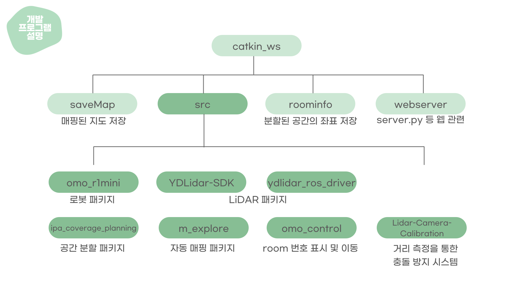
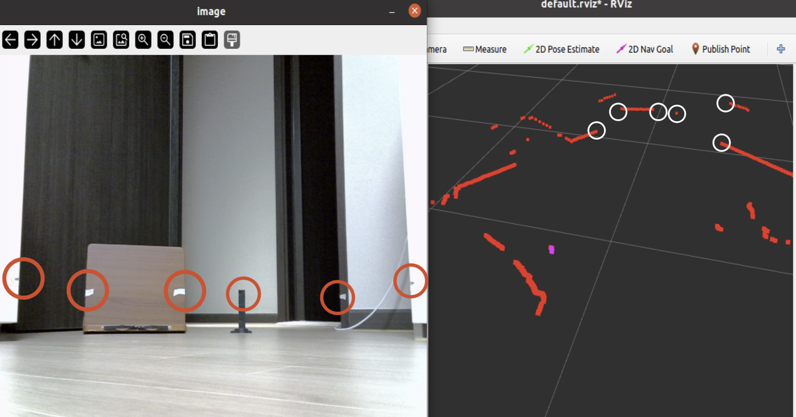
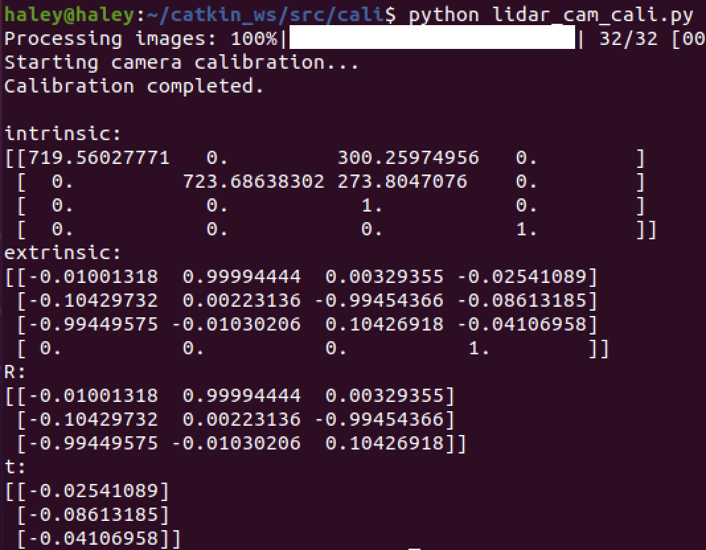
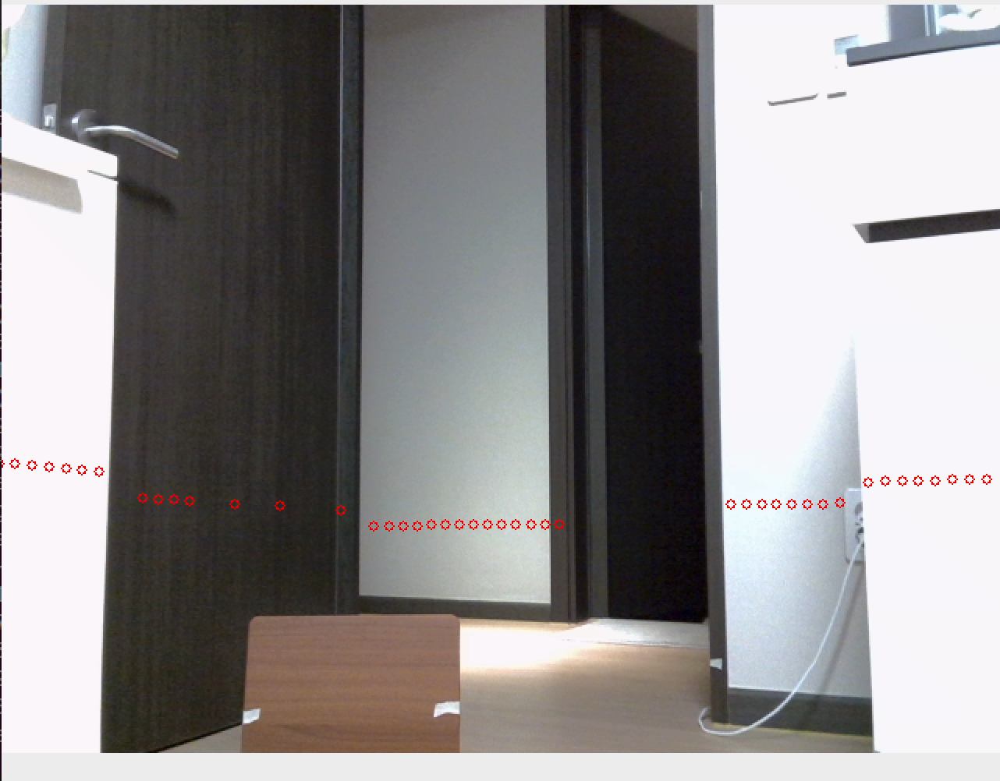

이 프로젝트는 LiDAR SLAM과 LSTM 기반의 공기 질 스케줄링 시스템을 활용하여 장애물을 피하는 객체 탐지 기능을 갖춘 모바일 공기 정화 로봇을 개발하는 데 중점을 두고 있습니다.
동기
오늘날의 세상에서 대기 질 관리는 특히 도시 환경에서 매우 중요합니다. 이 프로젝트는 장애물을 피해 자율적으로 공기를 정화하는 로봇을 만들어 다양한 실내 환경에서 최적의 기능을 보장함으로써 이 문제를 해결하는 것을 목표로 합니다.
환경
실내 가정 환경에서 시스템은 사용자 개입 없이 공간을 자동으로 식별하고 대기 질을 학습하며 최적의 공기 관리를 수행합니다.
로봇 특성:
로봇 모델: Omo R1 Mini
저사양 보드와 2D LiDAR를 사용하여 매핑을 수행, 성능 제한이 존재합니다.
위험 분석:
대기 질 데이터 학습:
시스템은 들어오는 대기 질 데이터를 지속적으로 학습해야 합니다. 하지만 하드웨어 제한으로 인해 로봇이 지속적으로 데이터를 수신하고 처리하는 것이 어렵습니다.
이동:
효과적인 공기 정화를 위해 지속적인 이동이 필요하지만, 로봇의 배터리 수명은 이동의 지속 시간과 범위를 제한하는 제약을 가합니다.
기능 및 구현
자동 매핑
ROS의 gmapping과 explore_lite를 사용하여 자동 매핑을 구현했습니다.
저사양 하드웨어로 인해 ROS2를 사용한 자동 매핑을 활용할 수 없었습니다.
대신, ROS의 gmapping과 explore_lite 패키지를 사용하여 자동 매핑을 달성했습니다.
아래는 explore_lite 패키지의 구현 방법입니다.
자동 매핑 기능은 explore_lite의 프론티어 알고리즘을 통해 경로 생성 매개변수를 조정하고, gmapping의 LiDAR 스캔 데이터를 기반으로 매핑을 생성하는 매개변수를 튜닝함으로써 구현되었습니다.
아래 이미지는 Omo R1 Mini 로봇에서 최종 자동 매핑 구현의 rqt 그래프입니다.
방 분할
Utilized the ipa_room_segmentation package to divide the mapped environment.
During this process, the following issues were encountered:
과도한 공간 분할, 첫 번째 이미지에서 볼 수 있음.
지도 원점의 차이로 인해 분할된 공간의 좌표가 지도에 맞지 않음.
이러한 문제를 해결하기 위해 다음과 같은 솔루션을 구현했습니다:
클러스터링을 통해 인접한 포인트를 제거했습니다.
지도 YAML 파일에서 원점을 조정했습니다.
OpenCV를 사용하여 지도를 반전하고 회전하여 지도 좌표를 올바르게 정렬했습니다.
아래는 올바르게 위치된 ROOM ID 분할이 된 지도입니다.

자동 매핑 및 내비게이션 시연
대기 질 분석
미세먼지 센서를 사용하여 대기 질 데이터를 수집하고 LSTM을 이용한 대기 질 예측 모델을 만들었습니다.
웹 제어
실제 사용자들이 제품을 사용할 때 리눅스에 익숙하지 않을 수 있으므로 사용자 친화적으로 만드는 것이 필요합니다.
rosbridge_suite을 활용하여 WebSocket 서버를 포함시켜 웹 브라우저가 ROS와 통신할 수 있도록 했습니다.
roslibjs:는 웹 애플리케이션이 rosbridge 프로토콜을 사용하여 ROS와 상호 작용할 수 있게 합니다. ros2djs:는 로봇과 지도와 같은 공간 정보를 렌더링하고, ROS 토픽과 메시지를 대화식으로 시각화합니다.
하드웨어/소프트웨어

구조

프로젝트 시연
Cartographer 자동 매핑
AMR자동 매핑Jetson Nano
간략한 설명
자동 매핑을 Cartographer 기반으로 Allbot에 구현하였으며, 다음과 같은 구성 요소를 활용했습니다:
동기
Gmapping보다 우수한 성능을 제공하는 Cartographer를 사용하여 자동 매핑을 수행하고자 합니다.
환경
로봇 특성:
로봇 모델: Allbot
상대적으로 무겁고 배터리 수명이 짧습니다.
위험 분석:
센서 활용:
다양한 센서가 있음에도 불구하고 Jetson Nano에서 카메라 지연이 발생합니다.
기능 및 구현
문제
ROS에서 자동 매핑을 수행하려면, 매핑된 지도가 explore_lite가 받아야 하지만 Cartographer는 지도를 특정 형식으로 게시하지 않습니다.
explore_lite의 구조는 다음과 같습니다.
Cartographer 지도는 explore_lite가 요구하는 EMPTY 또는 UNKNOWN과 같은 값으로만 표시되는 것이 아니라 다양한 점유 확률 값으로 표시됩니다.
Cartographer의 구조는 다음과 같습니다.
해결책
따라서, 우리는 다음과 같은 방식으로 문제를 해결할 계획입니다:
/submap_list를 통해 cmap을 게시합니다.
게시된 cmap을 표준 지도 형식으로 변환합니다.
변환된 지도에 프론티어 알고리즘을 적용하여 자동 매핑을 가능하게 합니다.
다시 말해, Cartographer에서 생성된 /cmap 토픽의 지도 데이터를 수신하고 이를 Gmapping에서 사용하는 지도 데이터 형식으로 변환한 후 /map 토픽에 게시합니다.
프로젝트 시연
LiDAR-카메라 캘리브레이션
LiDAR-카메라 캘리브레이션객체 탐지Python
간략한 설명
이 프로젝트는 정확한 거리 측정을 통해 향상된 충돌 방지 시스템을 설계하는 데 중점을 두었으며, 체크보드를 사용한 타겟 기반 조기 융합 방법을 통해 캘리브레이션을 수행했습니다.
동기
CareBuddy 프로젝트에서 LiDAR와 카메라를 독립적으로 사용할 때 발생하는 거리 측정 문제를 해결하기 위해서입니다.
시나리오
워크플로우: 카메라를 통한 객체 탐지 → LiDAR 및 카메라를 통한 거리 측정 → 특정 거리 접근 시 경고 메시지 표시.
위험 분석
대기 질 데이터 학습:
시스템은 들어오는 대기 질 데이터를 지속적으로 학습해야 합니다. 하지만 하드웨어 제한으로 인해 로봇이 지속적으로 데이터를 수신하고 처리하는 것이 어렵습니다.
이동:
효과적인 공기 정화를 위해 지속적인 이동이 필요하지만, 로봇의 배터리 수명은 이동의 지속 시간과 범위를 제한하는 제약을 가합니다.
캘리브레이션 및 거리 측정
카메라 캘리브레이션 (내부 매개변수)
단계:
체커보드 데이터 수집: 다양한 각도에서 캡처한 총 32개의 체커보드 이미지를 수집했습니다.
내부 매개변수 계산: 수집한 체커보드 이미지를 사용하여 OpenCV의 cv2.calibrateCamera를 통해 내부 매개변수(focal lengths fx, fy, principal point cx, cy, distortion coefficients)를 계산했습니다.
LiDAR-카메라 포인트 매칭

단계:
LiDAR 측정 높이 확인: LiDAR 포인트를 카메라 이미지 좌표에 맞추기 위해 폼 보드를 LiDAR 측정 높이(11.5cm)로 절단했습니다.
배치: LiDAR 측정 에지에서 11.5cm 위에 테이프를 부착하여 포인트 매칭을 용이하게 했습니다.
LiDAR-카메라 포인트 매칭: 표시된 영역에 따라 LiDAR와 카메라 포인트를 매칭했습니다.
외부 매개변수 계산

단계:
solvePnP: cv2.solvePnP를 사용하여 LiDAR-카메라 매칭 포인트 간의 회전 행렬(R)과 변환 벡터(T)를 계산했습니다.
Rodrigues 변환:
Rodrigues 변환을 사용하여 cv2.solvePnP에서 얻은 회전 벡터를 회전 행렬로 변환했습니다.
LiDAR 좌표를 카메라 좌표로 변환하기 위한 변환 행렬을 구성했습니다:
변환 행렬:
[[R | T]
[0 | 1]]
- R: 회전 행렬
- T: 변환 벡터
첫 번째 데이터 오버레이
문제: 지면에 LiDAR 포인트의 추가 선이 나타났습니다. 해결책:
YDLiDAR Launch 파일 매개변수 조정:
ranges: LiDAR 센서가 감지한 거리 값.
angle_min, angle_max: 측정 각도 범위.
angle_increment: 각도 간격.
결과 : 변화 없음.
LiDAR 위치 조정:
LiDAR가 평평한 지면에 투사될 때 반사 신호가 원래 지점에서 약간 벗어날 수 있습니다. 해결책 LiDAR 위치를 높여 문제를 완화했습니다.
데이터 오버레이

객체 탐지 및 거리 측정
객체 탐지
Ultralytics의 YOLOv8 모델 (yolov8n.pt)을 COCO 데이터셋을 통해 활용했습니다.
LiDAR 기반 거리 측정
탐지된 객체의 가장 앞쪽 LiDAR 포인트를 기반으로 거리를 측정했습니다.
필터링된 거리(ranges)와 각도(angles)를 사용하여 극좌표를 직교 좌표로 변환했습니다.
유클리드 거리를 계산했습니다.
카메라 기반 거리 측정
1) 초점 거리 추출: 체커보드 캘리브레이션을 통해 내부 매개변수를 얻었습니다.
2) 이미지에서 객체 높이 측정: YOLO 모델의 바운딩 박스를 사용하여 이미지에서 탐지된 객체의 픽셀 높이를 측정했습니다.
3) 실제 객체 높이 정의: 인식할 테디 베어의 실제 높이를 0.2m로 정의했습니다.
4) 거리 계산:
거리 = (초점 거리 * 실제 높이) / 바운딩 박스 높이
거리 기반 측정 방법 차이
문제:
2D LiDAR는 탐지된 객체가 평행할 때만 정확하게 거리를 측정할 수 있습니다.
LiDAR와 카메라의 탐지 범위가 다릅니다.
해결책:
거리가 0.2m 미만인 경우, 두 센서에서 동시에 탐지되지 않습니다. 조치: 0.2m 미만의 객체에 대해서는 카메라만을 사용하여 거리 측정을 수행합니다.
거리가 0.5m 미만인 경우, 평균 값 오류가 발생합니다. 조치: 오류가 0.05m 미만인 경우에만 평균을 계산합니다.
거리 측정 및 충돌 방지 시스템
1) 0.50m ≤ 객체 ≤ 0.70m: 객체가 0.5m에서 0.7m 사이에 있을 때 "주의! 객체 접근 중!"을 표시합니다.
2) 객체 < 0.50m: 객체가 0.5m보다 가까워질 때 "경고! 즉각적인 조치 필요!"을 표시합니다.
프로젝트 시연
H-mobility 자율주행 프로젝트
ROS2객체 탐지모터 제어LiDARPython
간략한 설명
수집된 차선 데이터를 기반으로 차량의 기울기를 조정하는 제어 알고리즘을 설계하고, 차선 인식 모델을 개발했습니다.
시나리오
카메라와 LiDAR가 장착된 아동 친화적인 차량을 활용하여 실내 차선 인식 및 신호등 감지를 통해 자율주행을 수행했습니다.
특징:
하드웨어: 220V 출력 배터리, SMPS, 모터 드라이버, Arduino Mega 2560, 포텐셔미터, Logitech C270 웹캠, RPLiDAR
차선 인식
문제 1: 차선 경사가 0인 경우, 스텝 함수 기반으로 스티어링 각도가 -7도와 7도 사이에서 갑자기 전환되었습니다.
해결책 1:
스티어링 변화를 부드럽게 하기 위해 사인 함수를 구현했습니다.
target_point와 car_center_point를 추가하여 target_slope에 따라 스티어링 각도를 조정하여 0도 주변을 유지했습니다.
문제 2: 차량이 오른쪽 차선으로 편향되었습니다.
해결책 2: ROI 내에서 car_center_point를 조정하여 차선 위치를 교정했습니다.
문제 3: 주행 중 스티어링 각도가 갑자기 변했습니다.
해결책 3: 스티어링 각도 변경을 최대 3도까지만 제한하여 급격한 변화를 방지했습니다.
제어 알고리즘
문제 1: 차선 경사가 0인 경우, 스텝 함수 기반으로 스티어링 각도가 -7도와 7도 사이에서 갑자기 전환되었습니다.
해결책 1:
스티어링 변화를 부드럽게 하기 위해 사인 함수를 구현했습니다.
target_point와 car_center_point를 추가하여 target_slope에 따라 스티어링 각도를 조정하여 0도 주변을 유지했습니다.
문제 2: 차량이 오른쪽 차선으로 편향되었습니다.
해결책 2: ROI 내에서 car_center_point를 조정하여 차선 위치를 교정했습니다.
문제 3: 주행 중 스티어링 각도가 갑자기 변했습니다.
해결책 3: 스티어링 각도 변경을 최대 3도까지만 제한하여 급격한 변화를 방지했습니다.
Gachigayo: AI 대화 서비스
프롬프트 엔지니어링FlaskAWSGitHubTTSSTTGPT API
간략한 설명
스마트폰 사용에 어려움을 겪는 노인을 위해 맞춤화된 AI 기반 대화형 교통 안내 서비스를 개발했습니다. 이 서비스는 다양한 교통 수단에 대한 종합적인 정보를 제공함으로써 사용자 편의성과 안전성을 우선시합니다.
동기
우리 사회에서 노인들이 겪는 교통 서비스 문제는 부인할 수 없는 현실입니다. 한국보건사회연구원과 보건복지부의 연구에 따르면 노인들은 디지털 정보 접근에 어려움을 겪으면서도 대중교통을 이용하고 있습니다. 100원택시와 같은 서비스가 존재하지만 실제 요구를 충족시키지 못하고 있습니다.
디지털 기술의 급속한 도입은 노인들의 정보 격차를 확대시켰습니다. 노인들은 일상생활에서 스마트폰과 컴퓨터를 사용하는 데 어려움을 겪고 있으며, 버스와 지하철과 같은 교통 수단을 이용할 때도 마찬가지입니다. 특히, 온라인에서 경로 정보, 일정, 환승 세부 정보를 찾는 것이 노인들에게 큰 장벽으로 작용하고 있습니다.
이러한 문제를 근본적으로 해결하기 위해 '노인을 위한 음성 안내 서비스'를 제안했습니다. 이 서비스는 노인들이 교통을 이용할 때 겪는 어려움을 해결하고, 그들의 교통 경험을 더욱 편리하고 안전하게 만들기 위해 설계되었습니다.
프로젝트 소개
Gachigayo는 디지털 기술에 익숙하지 않은 노인을 위해 전문화된 교통 정보를 제공하기 위해 설계된 AI 기반 대화형 서비스입니다. 이 서비스는 다양한 교통 수단에 대한 상세 정보를 제공하여 사용자 편의성과 안전성을 강조합니다.
도시/도시간 여행: 버스, 지하철, 기차 경로 정보와 택시 호출 연결 서비스를 제공합니다.
위치 정보: 목적지의 운영 시간을 확인하고 종료 시간에 대한 알림을 받을 수 있습니다.
날씨 정보: 현재 날씨 정보 제공, 악천후 시 택시 추천, 날씨 관련 주의 사항 알림.
이 서비스를 이용하려면 사용자 위치 정보에 대한 동의가 필요합니다. 유도된 질문을 통해 출발지와 목적지를 정확히 식별함으로써 정밀한 교통 정보를 제공하는 것을 목표로 합니다.
시장 조사
한국보건사회연구원에 따르면 노인들의 주요 교통 수단은 버스와 지하철로, 특히 70-74세 연령대에서 높은 이용률(68.2%)을 보이고 있습니다.
보건복지부의 2020년 설문조사에 따르면, 노인 중 71.2%가 외출 시 대중교통을 이용하고 있습니다. 그러나 대부분의 정보 서비스가 온라인 중심으로 제공되기 때문에, 노인 중 74.1%가 이를 어렵게 여기고 있습니다. 또한, 일상생활에서 디지털 기기 사용에 어려움을 겪고 있습니다.
대중교통의 접근성이 높음에도 불구하고, 급속한 디지털화는 노인들의 불편을 더욱 가중시켰습니다. 국가정보화정책연구원의 2018년 정보 격차 조사에 따르면, 노인의 디지털 리터러시는 전체 평균의 절반에 불과했습니다. 데일리 굿 뉴스와의 인터뷰에서 박씨(80)는 "알고 있는 곳밖에 갈 수 없고, 버스 기사에게 길을 묻는 것이 부담스럽습니다."라고 말했습니다.
금융 뉴스 기사에 따르면, 대중교통 서비스가 디지털화됨에 따라 노인들이 이러한 변화에 적응하는 데 어려움을 겪고 있습니다. 예를 들어, A씨(50대 후반)는 스마트폰 앱 기반의 택시 예약이 낯설어 거리에서 오랜 시간 대기하게 됩니다. 유사하게, C씨(71)는 기차를 디지털로 예약하는 데 어려움을 겪어 역을 방문하거나 전화로 예약하게 됩니다.
현재 대부분의 버스 및 지하철 정보가 온라인에서 제공되고 있지만, 약 74.1%의 노인들이 이러한 온라인 정보를 얻기 어렵다고 합니다. 결론적으로, 대중교통 서비스의 디지털화는 노인들이 이러한 변화에 적응하는 데 여러 가지 문제를 야기했으며, 대중교통을 적극적으로 이용함에도 불구하고 노인들에게 맞춤화된 효율적인 서비스가 부족함을 반영합니다.
주요 기능 및 구현
노인들의 스마트폰 사용 능력이 점차 증가하고 있지만, 전화 통화 및 동영상 시청에 국한되어 있습니다. 따라서, **Gachigayo**는 디지털 리터러시가 낮은 노인을 위해 AI 음성 인식 기반 대화형 서비스를 개발하여 편리한 서비스를 제공하는 것을 목표로 합니다.
기능 1: 도시/도시간 여행 경로 안내
버스, 지하철, 기차 경로 정보와 택시 호출 연결 서비스를 제공합니다.
기능 2: 날씨 정보 안내
현재 날씨 정보 제공, 악천후 시 택시 추천, 날씨 관련 주의 사항 알림.
기능 3: SMS 서비스
상세 경로 정보를 문자로 전송하고, 도시간 여행 시 Koreail/버스 터미널 번호를 메시지에 포함합니다.